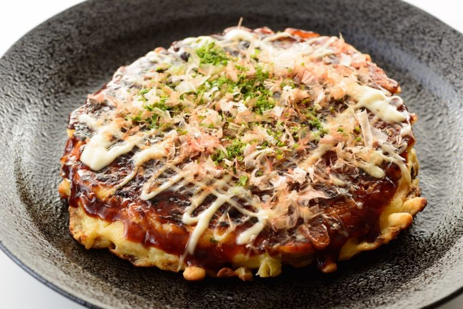

Okonomiyaki

Savory Japanese Pancake
hey are a savory dish which combines vegetables, carbs and protein all in one, perfect for a snack, lunch or dinner!
This street food from Osaka is also great for using up whatever you have in the fridge.
Especially if you live in Japan, and are likely to have access to a lot of ingredients that, while uncommon in other countries, are staples here!
They are good for using up whatever protein you have on hand, chicken, pork, fish or even tofu.
Ingredients
- 100g okonomiyaki flour. If you do not have okonomiyaki flour, you can mix 100g regular flour + 1tsp baking powder + 1 tsp soy sauce (or 2g dashi stock powder instead of soy sauce)
- 100 ml water
- 1 egg
- 1/4 cabbage
- 1 spring onion
- Vegetable oil for pan frying
- Any meat or seafood of your choice. For a vegetarian option, you can use firm, smoked or deep fried (age) tofu or tempeh bacon.
- Mayonnaise (Japanese-style mayonnaise like Kewpie is best)
- Okonomiyaki sauce
Steps
- Whisk together the okonomiyaki flour (or flour + baking powder + soy sauce/dashi powder) and water.
To make the batter fluffier you can refrigerate for 1-8 hours to let the gluten rest.
However, even if you do not, the okonomiyaki will still taste good.
- Finely chop the cabbage and spring onion.
Add the chopped vegetables to the batter.
- Mix the egg into the batter, being careful not to over mix, or the final okonomiyaki will be too chewy and tough.
- Thinly slice your protein and set aside.
- Heat the oil in a large frying pan or griddle, on medium heat.
- Once the pan is hot, add a circle of batter to the pan.
The okonomiyaki pancake should be about 2cm thick, but can be made thinner to make cooking easier.
- Add the slices of protein on top of the okonomiyaki and cover with a lid.
Cook for about 5 minutes covered.
- After the bottom of the pancake is browned, flip it over and cook covered for another 5 minutes.
- Flip a third time and cook uncovered for 2 minutes.
- Take off the heat, plate and add toppings of your choice: mayonnaise, okonomiyaki sauce etc.